Podrobný průvodce pro uživatele, kteří se na Reli.one ještě nezaregistrovali
nebo jsou připraveni vytvořit samostatný účet prodejce s novým e-mailem.
Verze: červen 2026
1. Výběr typu účtu
Na Reli.one existují dva nezávislé typy účtů: kupující a prodejce.
Pokud chcete prodávat zboží, při registraci vyberte možnost «Stát se prodejcem»,
nikoli «Registrovat se jako kupující».
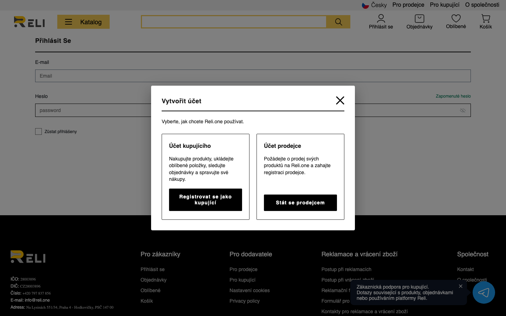
Obr. 1 — Okno výběru typu účtu při registraci na webu
Zaškrtněte souhlas s podmínkami a zásadami ochrany osobních údajů, poté klikněte na Registrovat se.
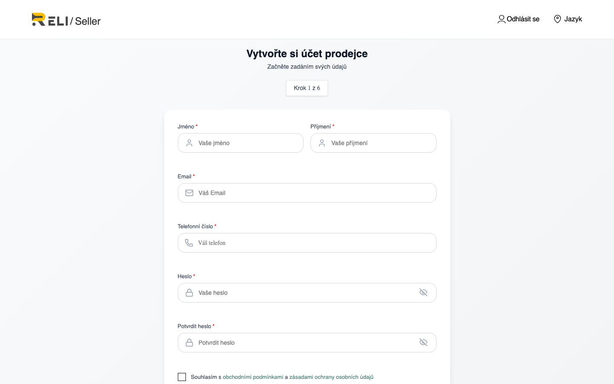
Obr. 2 — Stránka «Vytvořte si účet prodejce»
Krok 2.2 — Ověření e-mailu
Na uvedený e-mail přijde 6místný kód. Zadejte jej na stránce ověření.
Pokud e-mail nepřišel, zkontrolujte složku spam nebo požádejte o opětovné odeslání kódu.
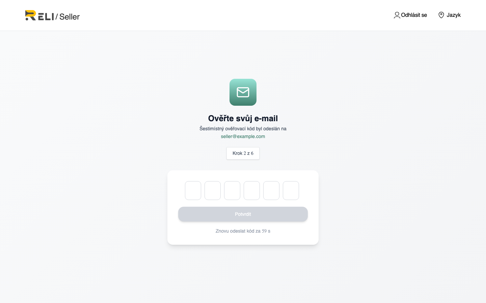
Obr. 3 — Ověření e-mailu (OTP)
3. Onboarding prodejce
Po ověření e-mailu začíná proces ověření prodejce (onboarding).
Je nutné jej projít celý, než budete moci vystavovat zboží.
Krok 3.1 — Vyberte typ prodejce
OSVČ (samostatně výdělečně činná osoba) — fyzická osoba s podnikatelskou činností;
Společnost – právnická osoba — právnická osoba (firma).
Požadované údaje a dokumenty závisí na zvoleném typu.
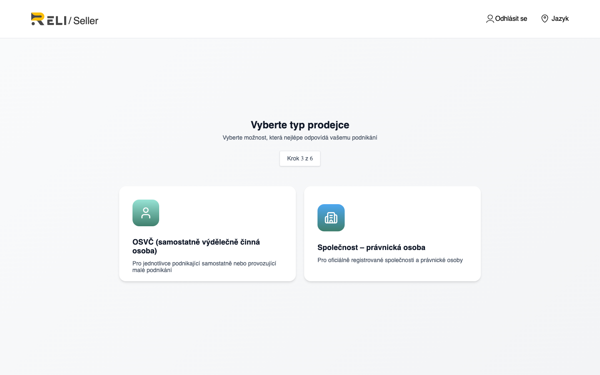
Obr. 4 — Výběr typu: OSVČ nebo společnost
Krok 3.2 — Automatické doplnění podle IČO z veřejného rejstříku (pro české prodejce)
Pokud je vaše společnost nebo podnikatelská činnost registrována v České republice,
Reli.one může načíst část právních a daňových údajů z veřejného rejstříku
podle čísla IČO.
Toto je pomocná funkce, není povinná. Vždy můžete kliknout na
«Vyplnit ručně» a zadat údaje bez dotazu do rejstříku. Automatické doplnění
nenahrazuje nahrání dokumentů ani ruční moderaci žádosti.
Co je IČO
IČO (Identifikační číslo osoby) — 8místné identifikační číslo
právnické osoby nebo podnikatele v České republice. Před dotazem do veřejného rejstříku systém ověří formát
a kontrolní součet IČO. Neplatné číslo do rejstříku neodesílá.
Při prvním otevření se zobrazí okno «Předvyplnit právní údaje české společnosti».
Zadejte české IČO (8 číslic) a klikněte na Načíst z veřejného rejstříku.
Zkontrolujte blok Náhled z veřejného rejstříku: název, IČO, právní forma, sídlo, nápověda DIČ.
Klikněte na Použít v onboardingu — údaje se doplní do formuláře (pouze do prázdných polí).
V případě potřeby opakujte načtení v bloku Informace o společnosti tlačítkem Načíst z veřejného rejstříku, poté Použít ve formuláři.
Pokud veřejný rejstřík vrátil údaje o zástupci, v náhledu se může objevit blok Návrhy zástupců — klikněte na Použít zástupce, aby se doplnilo jméno a role (údaje zůstávají editovatelné).
Opravte chyby ručně, doplňte zbývající pole a pokračujte v onboardingu.
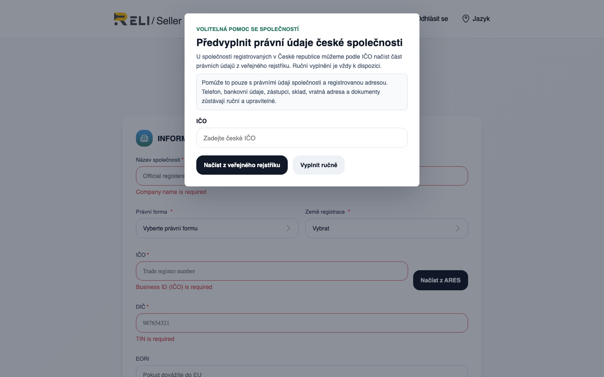
Obr. 5 — Úvodní okno automatického doplnění pro společnost (zadání IČO)
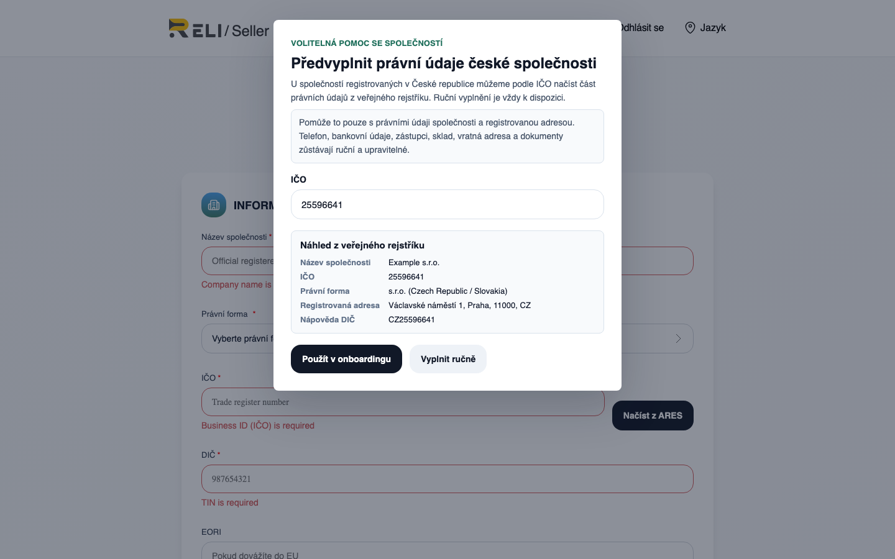
Obr. 6 — Zadané IČO, načtené údaje z veřejného rejstříku (Náhled z veřejného rejstříku)
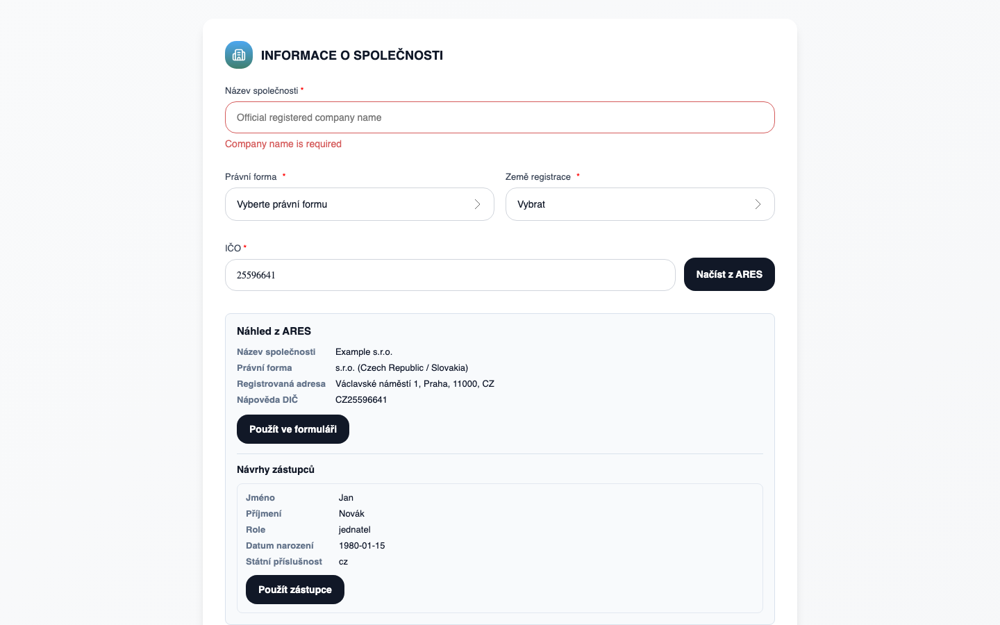
Obr. 7 — Náhled z veřejného rejstříku a tlačítko «Použít ve formuláři» v bloku Informace o společnosti
Při prvním vstupu se zobrazí okno «Předvyplnit české podnikatelské a daňové údaje».
Zadejte IČO a klikněte na Načíst z veřejného rejstříku.
Zkontrolujte náhled: název v rejstříku, IČO, sídlo, nápověda DIČ/TIN.
Klikněte na Použít v onboardingu.
Stejné kroky jsou dostupné v bloku Daňové údaje: pole IČO → Načíst z veřejného rejstříku → Použít ve formuláři.
Ručně doplňte osobní údaje, dokumenty, banku, sklady a adresy.
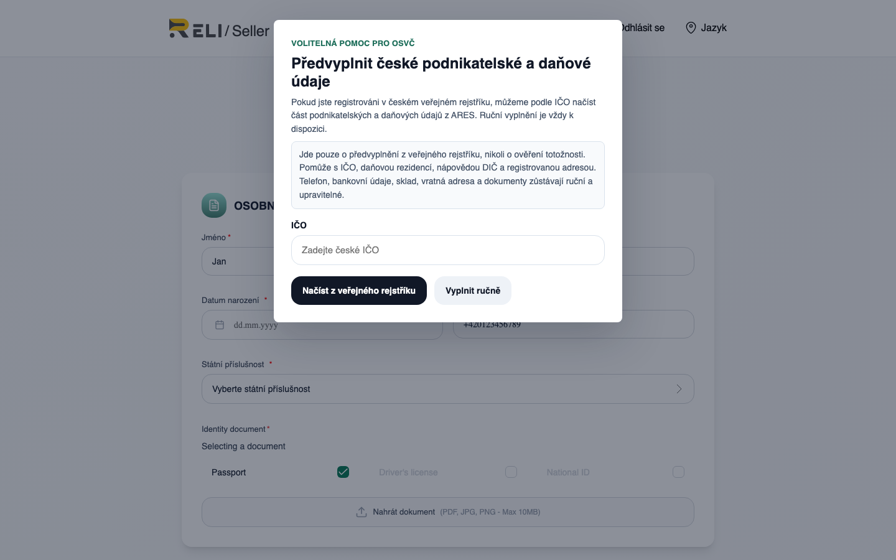
Obr. 8 — Úvodní okno automatického doplnění pro OSVČ
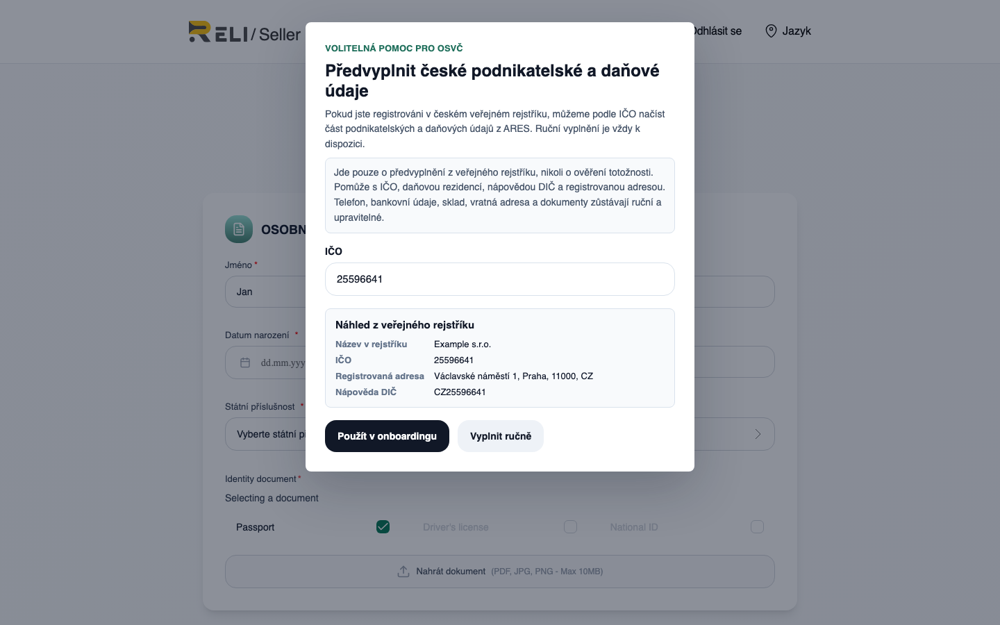
Obr. 9 — Zadané IČO, načtené údaje z veřejného rejstříku (Náhled z veřejného rejstříku)
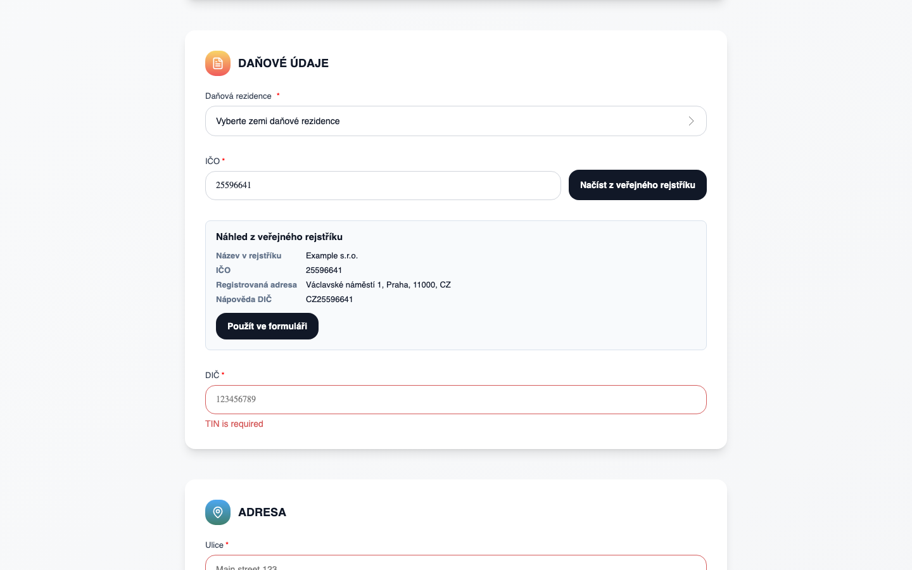
Obr. 10 — Náhled v bloku Daňové údaje a tlačítko «Použít ve formuláři»
Která pole může doplnit veřejný rejstřík
Údaje z veřejného rejstříku
Společnost
OSVČ
Název (obchodní jméno)
Název společnosti
Název v rejstříku (informativně)
IČO
IČO
IČO
Právní forma
Právní forma
—
Země registrace
Česká republika (CZ)
Daňová rezidence = CZ
Sídlo (ulice, město, PSČ)
Adresa společnosti
Adresa (daňový blok)
DIČ (nápověda)
DIČ (TIN)
DIČ (jako nápověda)
Zástupce (jméno, role)
Zástupce (nápověda)
—
DIČ z veřejného rejstříku je pouze nápověda. Je to daňový identifikátor z rejstříku;
neověřuje status plátce DPH (VAT). Zkontrolujte DIČ/TIN
a v případě potřeby opravte ručně před odesláním žádosti.
Co veřejný rejstřík nedoplní (nutné zadat ručně)
telefon a e-mail (kromě údajů uvedených při registraci);
bankovní údaje (IBAN, SWIFT/BIC, majitel účtu);
pro společnost — úplné osobní údaje zástupce (datum narození, státní příslušnost), pokud nebyla použita nápověda;
Opravte číslo (8 číslic, správný kontrolní součet) a opakujte dotaz
IČO nebylo nalezeno ve veřejném rejstříku
Pokračujte ručním vyplněním formuláře — to je běžný scénář
Veřejný rejstřík je dočasně nedostupný
Zkuste to později nebo vyplňte všechna pole ručně
Upozornění Neaktivní společnost / Neaktivní záznam v rejstříku
Subjekt v rejstříku je neaktivní (např. v likvidaci). Zkontrolujte IČO; žádost stále prochází ruční moderací
DIČ «Odvozená nápověda DIČ»
Rejstřík nevrátil DIČ — systém nabídl vypočtenou nápovědu. Hodnotu vždy ověřte
Po odeslání žádosti (Odeslat k ověření) backend dodatečně porovná
údaje s veřejným rejstříkem a uloží výsledek jako nápovědu pro moderátora.
To nezruší ruční kontrolu: stav žádosti zůstává Čeká na ověření do rozhodnutí týmu Reli.one.
Omezení: v současnosti automatické doplnění z veřejného rejstříku funguje pro subjekty
registrované v České republice. Pro ostatní země vyplňte formulář ručně.
Krok 3.3 — Vyplnění údajů a nahrání dokumentů
Pro OSVČ systém postupně vyžádá:
osobní údaje (datum narození, státní příslušnost, telefon);
daňové údaje (země, DIČ/TIN, v případě potřeby IČO);
Povolené formáty dokumentů: PDF, JPG, PNG. Maximální velikost souboru — 10 MB.
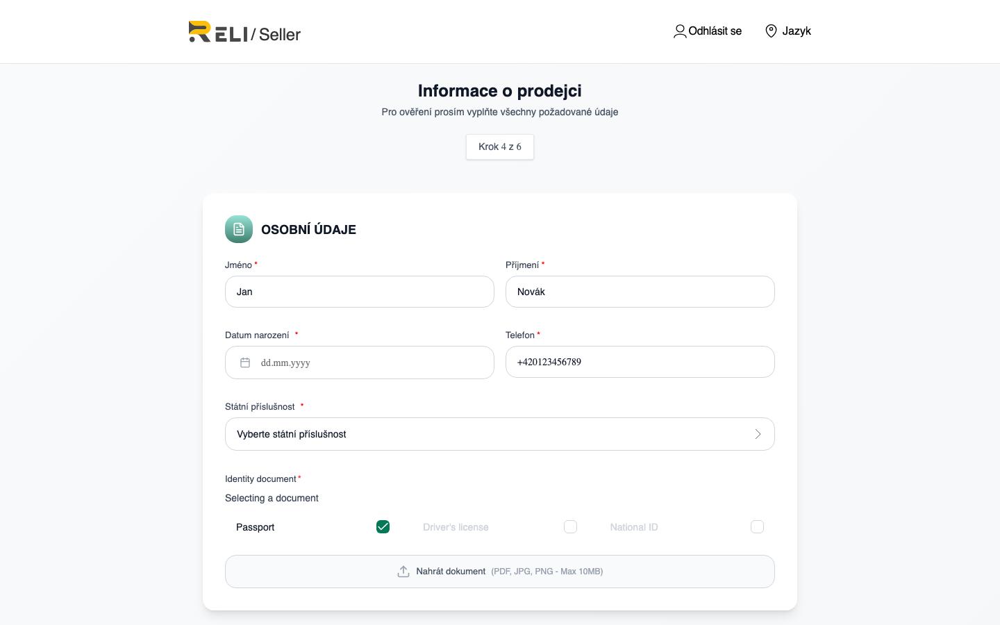
Obr. 11 — Formulář «Informace o prodejci» (údaje a dokumenty)
Krok 3.4 — Kontrola údajů a odeslání žádosti
Na obrazovce kontroly ověřte, že všechny bloky jsou správně vyplněny, a klikněte na
Odeslat k ověření. Stav žádosti se změní na
Čeká na ověření — čekání na rozhodnutí administrátora.
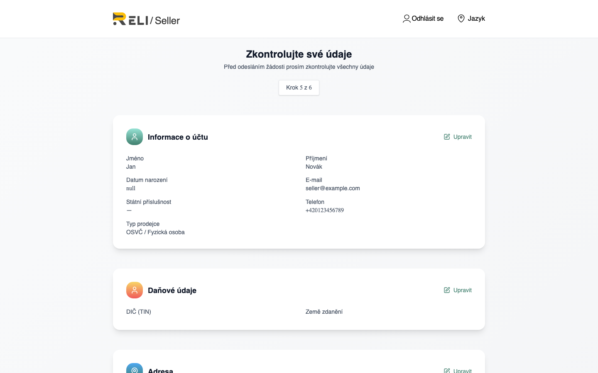
Obr. 12 — Obrazovka kontroly před odesláním žádosti
Krok 3.5 — Čekání na schválení
Po odeslání uvidíte potvrzení, že žádost byla přijata. Rozhodnutí přijímá tým Reli.one.
Po schválení získáte přístup do prodejního panelu; při zamítnutí — e-mail s důvodem
a možnost opravit údaje a podat žádost znovu.
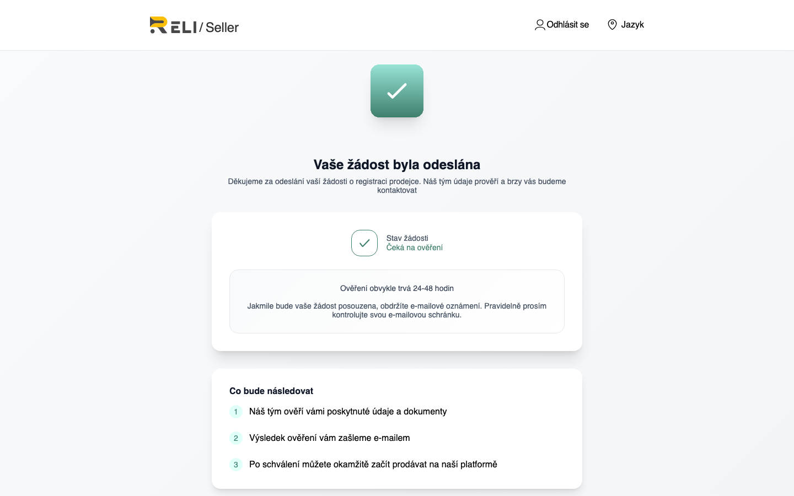
Obr. 13 — Žádost odeslána (Čeká na ověření)
4. Co dál
Po schválení otevřete prodejní panel:
https://reli.one/seller/login
a přejděte do sekce zboží. Podrobná instrukce k vystavení je v samostatném PDF
«Vystavení zboží».